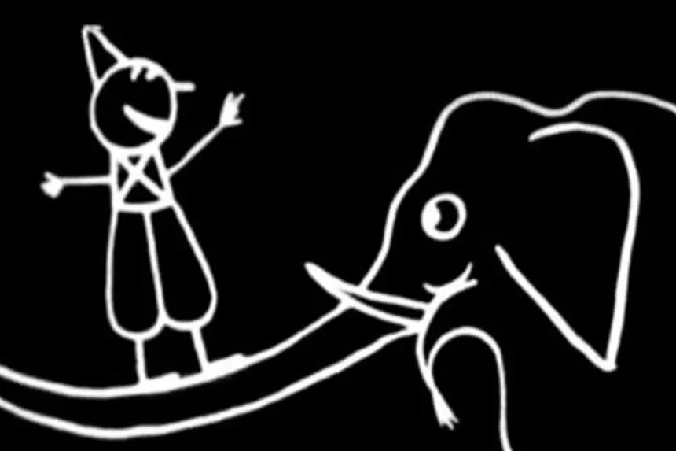
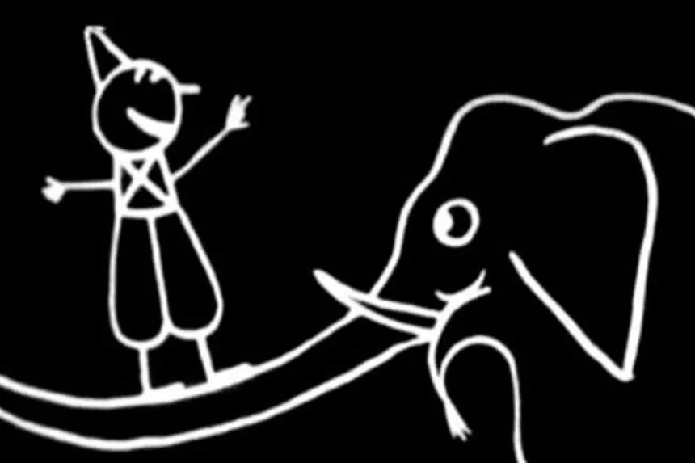
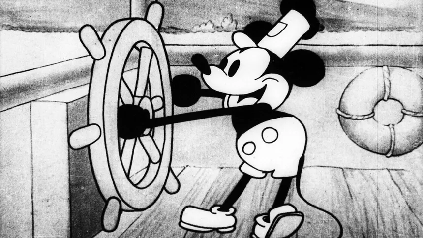
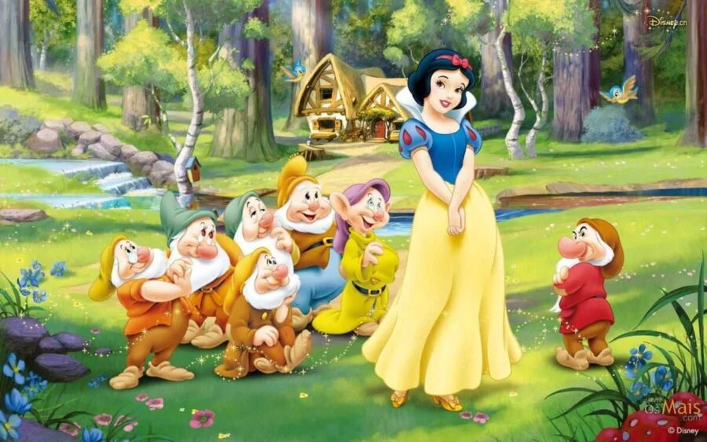
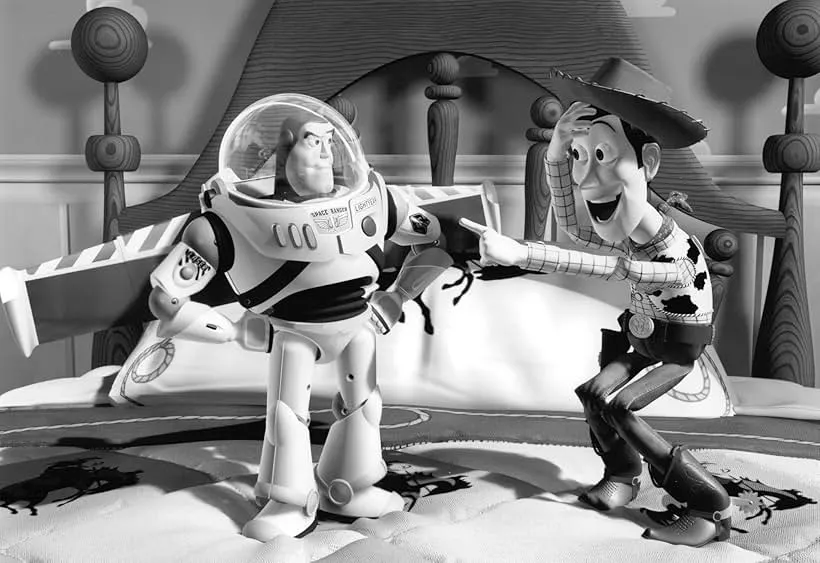
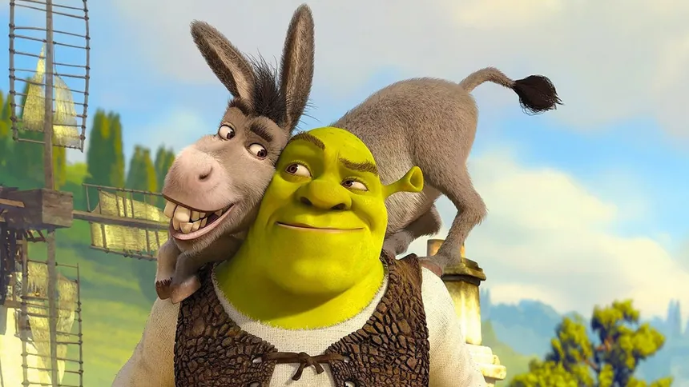

1908: O Início com "Fantasmagorie"
Émile Cohl cria o que é considerado por muitos o primeiro desenho animado da história. Feito com desenhos simples em um quadro-negro, marcou o nascimento da animação como a conhecemos.
Émile Cohl cria o que é considerado por muitos o primeiro desenho animado da história. Feito com desenhos simples em um quadro-negro, marcou o nascimento da animação como a conhecemos.
Walt Disney revoluciona a indústria ao lançar o primeiro curta de animação com som totalmente sincronizado. A estreia de Mickey Mouse mudou para sempre como as animações eram produzidas e consumidas.
A Disney lança "Branca de Neve e os Sete Anões", o primeiro longa-metragem de animação em celuloide e em cores. O sucesso estrondoso prova que a animação podia sustentar narrativas complexas e ser um grande sucesso de bilheteira.
A Pixar, em parceria com a Disney, lança o primeiro filme de animação inteiramente feito por computação gráfica (CGI). "Toy Story" não só foi um marco tecnológico, mas também estabeleceu um novo padrão de roteiro e narrativa para o gênero.
A DreamWorks Animation vira o mundo dos contos de fadas de cabeça para baixo com "Shrek". O filme utiliza o CGI para criar um universo cômico e repleto de referências à cultura pop, estabelecendo um novo tom para as animações e provando que havia um forte concorrente para o domínio da Pixar no campo do 3D.
